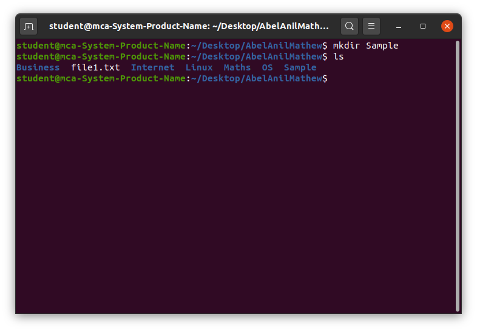

mkdir
The mkdir (make directory) command is used to create new directories in the Linux filesystem. It allows users to organize files by creating folder structures.
-
Purpose and Functionality
- Create one or multiple directories.
- Create directories with specific permissions.
Key Features of the mkdir Command
- Simple Directory Creation: Creates a single directory.
- Create Parent Directories: With the -p option, creates parent directories if they do not exist.
- Permission Control: Set specific permissions for the new directory.
